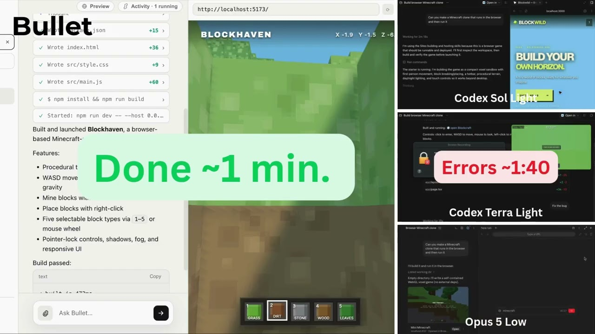
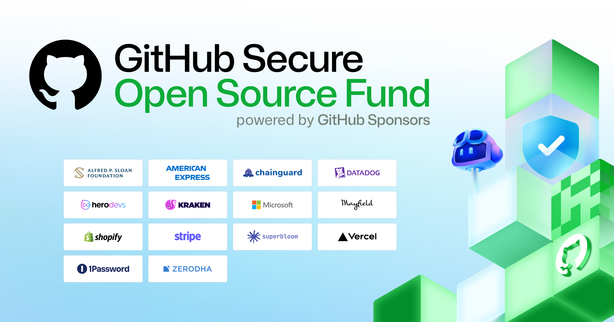
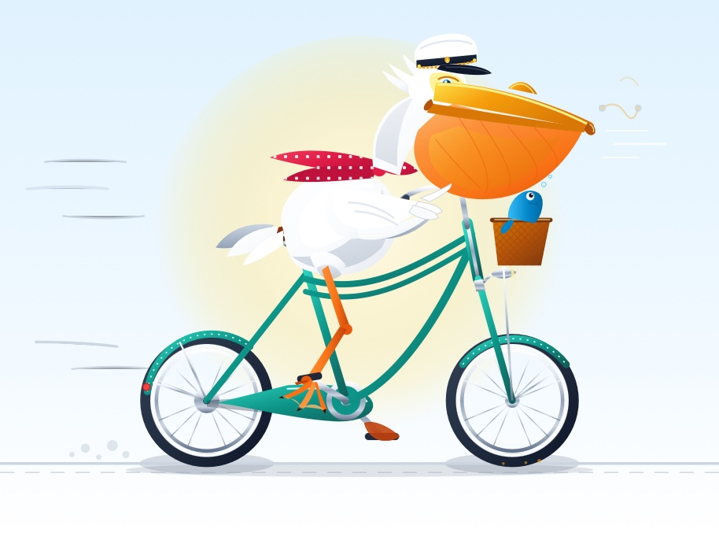
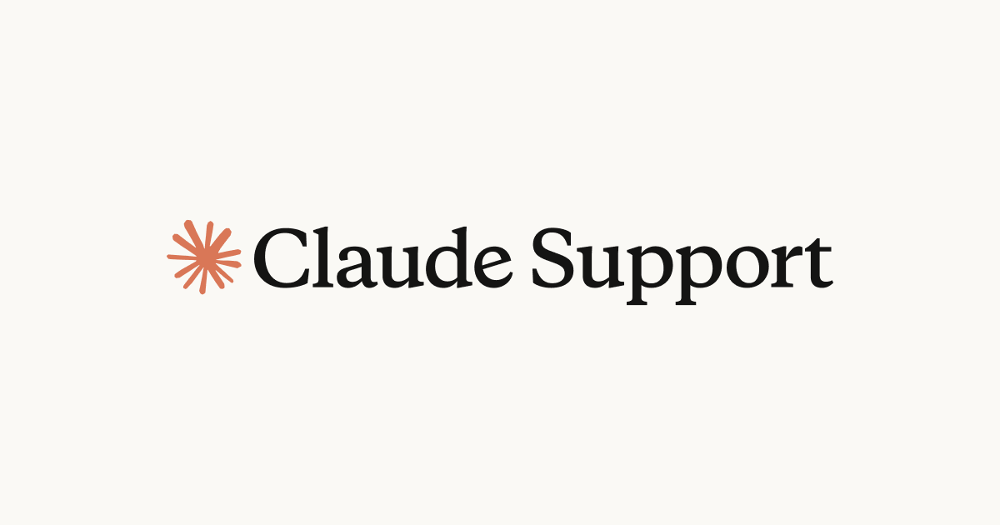
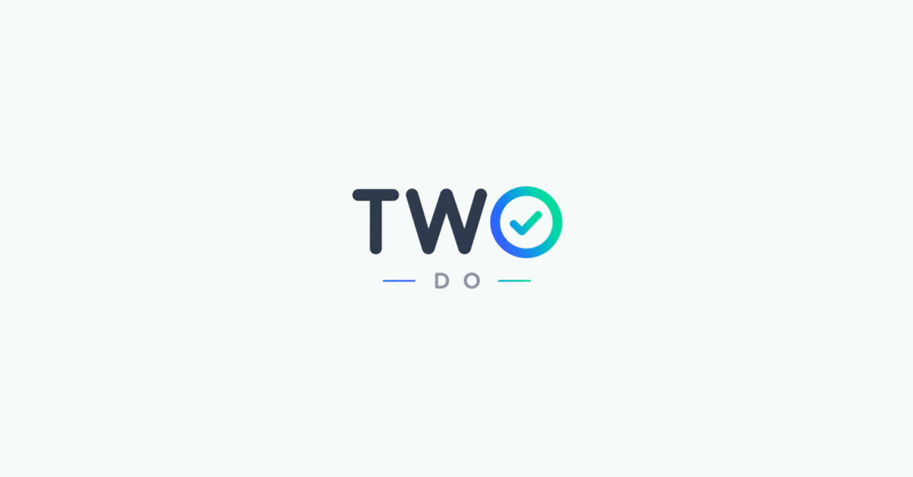
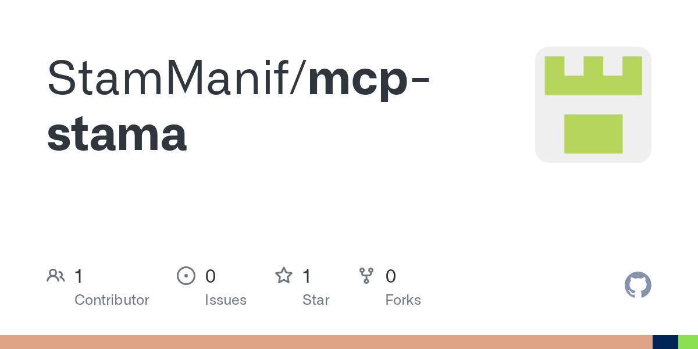
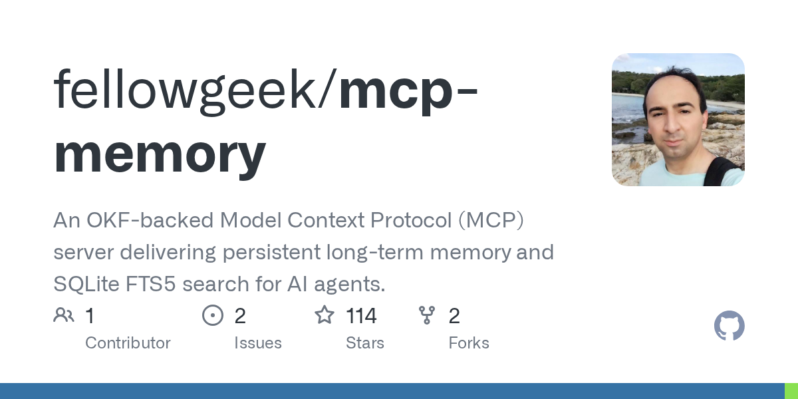

🔥 Top 3 (must read)
Launch HN: Bullet (YC S26) – A Faster Coding Agent
(discussion) Bullet is a new YC-backed coding agent that pitches speed as its main edge over existing tools like Claude Code and Copilot. It's getting active HN discussion (86 points, 56 comments) about how it compares on real tasks. Why it matters: you already use coding agents daily — worth watching if a faster agent changes your workflow.

Patterns and problems in emerging multiagent systems
Anthropic looks at real-world patterns showing up when teams build systems with multiple AI agents working together, plus common failure modes. It's research-based, not just theory. Why it matters: as coding agents get more autonomous, knowing multiagent failure patterns helps you design safer agent setups for your own team.

What 50 open source projects taught us about security in the AI era
GitHub shares findings from 50 open source projects that combined AI-assisted workflows with maintainer expertise and security tooling to harden their code. It's a practical look at what worked, not just a benchmark. Why it matters: directly useful for engineering practices — how to fold AI-assisted code review into a security-conscious process.

🛠 Tools & releases
sqlite-utils 4.2
big upgrade to
table.transform() for complex ALTER TABLE operations (create-copy-drop-replace pattern), plus a quick 4.2.1 patch for a missing-dependency crash.S
🤖 AI for developers
llm-gemini 0.33
adds support for Gemini 3.7 Flash, 3.6 Flash, 3.5 Flash-Lite, and two new embedding models to Simon Willison's
llm CLI plugin.
Can I use my outputs to train an AI model?
Claude's support doc on data/training policy, sparking a big HN discussion (86 points, 78 comments) worth a skim if your team uses Claude on sensitive code.

🎯 For me
Nothing today hits your Node/TypeScript/React/Flutter or testing stack directly. Closest fits are the Bullet coding agent launch and the multiagent-systems research above (both in Top 3) — relevant to how you evaluate and design AI-assisted dev workflows, even without a stack-specific tool this time.
💡 App ideas & indie builds
TwoDo
a shared to-do list for exactly two people (cross-platform iPhone/Galaxy), no sign-up, join via a 6-character code, lives on the lock screen. Nice model for minimal-friction, couple/small-group utility apps — relevant if you ever build a lightweight Flutter companion app.

Droppy
a macOS "productivity hub" the creator built because they felt macOS never shipped one natively. Good example of filling a platform-level gap with a focused native app.
Daisey (1000 flowers)
a world map where anyone can anonymously plant a flower emoji that grows over 24 hours; hit 90% engagement and set donation goals tied to milestones. Simple mechanic + real-time shared state + a feel-good hook — a good pattern for lightweight social/ambient apps.
MCP-stama
(discussion) — an ultra-fast Rust MCP server with zero dependencies. Useful if you're building or evaluating MCP servers for agent tooling.

MCP Memory
(discussion) — fast agent memory built on Google's OKF and SQLite FTS5. Solves the "agents forget everything between sessions" problem — worth a look if you're building your own coding-agent tooling.

🎓 Try this
Try llm-gemini 0.33 — a one-command plugin install (
llm install llm-gemini) gives you CLI access to the newest Gemini 3.7 Flash and embedding models, good for quickly comparing against Claude/GPT on a coding task.